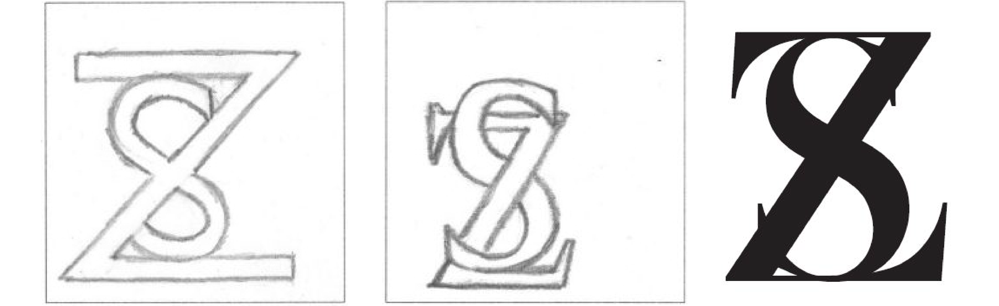
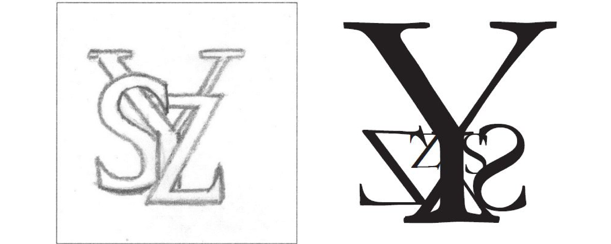
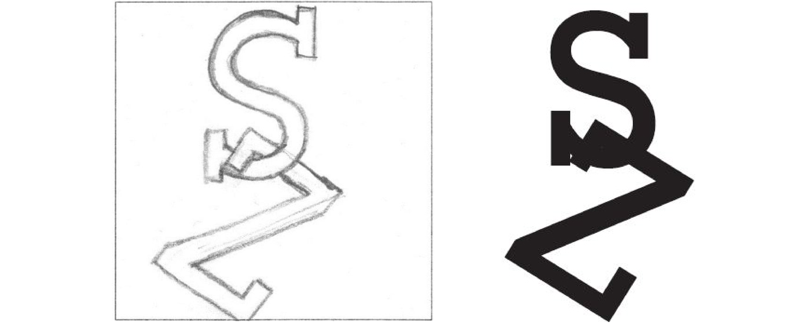

Print/ Illustration
2012
Individual Project
Project Requirements
This project is all about letterforms. By designing initials through different typefaces and various compositions, we can get a sense of how typefaces differ and how the difference can help us express ourselves in addition to composition.
Project Process and Final Delivery
Sketching is an important hands-on way to understand the differences between typefaces. I felt how typefaces vary in terms of stroke thickness and curve.
Baskerville
The original sketch was in Gill Sans because I wanted to show the symmetry of the two letters “S” and “Z”. And the two letters show the best symmetry in Gill Sans. I also tried out the similar design in Minion. Since I didn’t fill the stroke in the sketch, the overlap between the two letters showed the letter “S” goes behind the letter “Z”. After exploring this idea in Illustrator, I chose the font Baskerville. While showing symmetry, the letter “Z” is square enough that it seems that “Z” is embracing the letter “S”, giving a sense of comfort.
Garamond
The original idea was to express overlapping and layers. Yet, in Illustrator, I got too creative with copy and paste. The reflected letters “Z” and “S” were based on the idea that the two letters were mirror images of each other. The small set of letters are letters flipped 180 degrees and the interesting thing about the letters “Z” and “S” is that you still see the letters as “Z” and “S” upside down. The small “Y” is also flipped 180 degrees and merges perfectly into the large upright letter “Y”. But the main reason why I love this composition is that the small set of letters is exactly the same as the large set but smaller and upside-down.
Rockwell
This composition is the only one that inherited all features from the original sketch. The reason why I chose the font Rockwell is because the start and end of the letters look like little hooks.
{kind=link}
{kind=link}